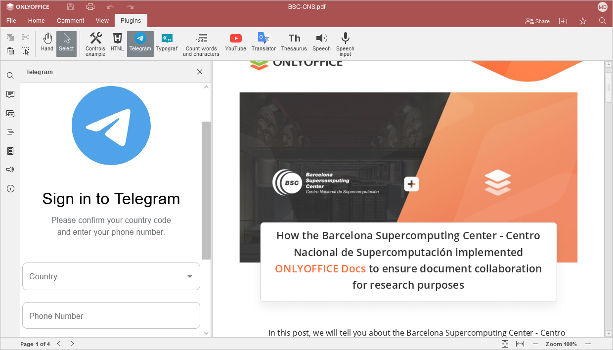

Komunikacija tokom uređivanja
U PDF Uređivaču iz ONLYOFFICE-a, uvek možete biti u kontaktu sa kolegama i koristiti popularne online čet aplikacije, kao što je Telegram.
Telegram dodatak nije instaliran po defaultu. Informacije o instaliranju pronađite u odgovarajućem članku: Dodavanje dodataka u ONLYOFFICE Desktop Editors Dodavanje dodataka u ONLYOFFICE Cloud, ili instalirajte dodatak pomoću Upravljača dodacima.
Telegram
Da biste započeli četovanje putem Telegram dodatka:
- Pređite na karticu Dodaci i kliknite na Telegram,
- unesite svoj broj telefona u odgovarajuće polje,
- označite polje Ostavi me prijavljenim ako želite da zapamti podatke za tekuću sesiju i kliknite na dugme Dalje,
-
unesite kod koji ste dobili u Telegram aplikaciji,
ili
- prijavite se pomoću QR koda,
- otvorite Telegram aplikaciju na svom telefonu,
- idite na Podešavanja > Uređaji > Skeniraj QR,
- skenirajte sliku za prijavu.
Sada možete koristiti Telegram za trenutnu komunikaciju u okviru ONLYOFFICE uređivača.
